{kind=link}
{kind=link}
{kind=link}
{kind=link}
{kind=link}
{kind=link}
{kind=link}
{kind=link}
{kind=link}
{kind=link}
{kind=link}
{kind=link}
{kind=link}
{kind=link}
{kind=link}
{kind=link}
{kind=link}
{kind=link}
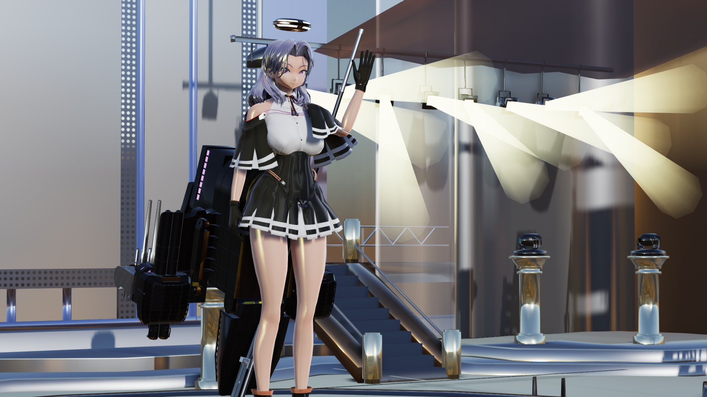

左:sdCrossFilter 無効 / 右:sdCrossFilter 有効
sdPBRにはいくつかポストエフェクトが付属しています。これらは単なるオマケという所もありますが、普通のシーンに使う限り併用がほぼ前提になっている物もあり、意外と分かりづらい面があります。この記事では、それぞれの使い方や「こういう時に使うと良いですよ」的なTipsをご説明します。
sdPBR付属のポストエフェクトは現在のところ一部を除いてsdPBRがMMD内に読み込まれている事を前提とはしていません。ほとんどが単体で他のエフェクトやシェーダと使う事が出来ます。ただし、ソースコードのレベルではsdPBRの設定やヘルパー関数を読んで使っているので、ディレクトリを移動させたり、sdPBR自体をストレージから消していたりすると読み込み時にエラーが発生します
気付いたら大量に作ってしまったので以下の目次を見るだけでウンザリするかもしれませんが、それぞれ色んな絵作りに活かせる奴らですから、貴方の作品に合った物がきっといくつか有ると思います。
sdToneMapper ほぼ必須。なんだか絵が引き締まっていい感じになります
sdEyeAdaptation2 興奮すると6倍になる人体の器官はなんでしょうか？
sdSSR2 みんな大好き、床が仕事をするフリをするエフェクトが2になりました
sdUnsharpMask 普通のシャープネスフィルタです
sdSSGI3 光が拡がります
sdFXAA アンチエイリアシングを施しジャギーを低減します
sdChromaBlur 色ずれを含んだモーションブラー風の表現をします
sdDiffusion カメラのディフュージョンフィルタを模した光の拡散を表現します
sdCrossFilter カメラのクロスフィルタを模した光芒を表現します
ColorGrading/sdHistogram カラーグレーディング用、現在使用されている色の統計情報を表示します
ColorGrading/sdColorGradingSDR カラーグレーディングMME本体。全体的な色の傾向を調整します
sdExpensiveLens カメラのレンズの各種収差由来の色ズレ・ボケなどを表現します
VolumetricCloud/sdVolumetricCloud ボリューム感のある雲を描きます
VolumetricCloud/sdTornado 竜巻を描きます
sdGroundGlass 物体をすりガラスにします(sdPBR専用)
sdTAA Temporal Anti-Aliasingによるアンチエイリアシングを施し画像を滑らかにします
Blur/sdShiirare 放射状ブラーにより強いられている雰囲気を出します
Blur/sdHashiri 直線状ブラーにより疾走感を出します
Blur/sdCCDSmear CCDカメラのスミアー風のエフェクトです
DoF/sdHexDoF 六角形のボケを入れられる被写界深度(DoF)エフェクトです
LensFlare/sdStreakAnamorphic アナモルフィックレンズ風の横に長いレンズフレアを入れます
LensFlare/sdLensFlareAnamorphic アナモルフィックレンズ風の太陽などの高輝度の物体からのレンズフレアを入れます
MosaicFragment/*.*静止画用フィルタ集です。動画にも一応使えます。
SSS/sdSSSSS表面下散乱を強化してお肌の質感を少し変えます
Fog/sdFogフォグを掛けるエフェクトです
Nebakkoi/sdNebakkoiねばっこいオーラをモデルから出すエフェクトです
アクセサリのTrパラメータで効き具合・表示上の濃さを調整できます。お好みの加減でどうぞ！
sdPBR専用エフェクト(sdSSR2,sdSSGI2以降,sdGroundGlassなど)は、基本的にsdPBRから追加ライトへ情報を渡すためのG-Bufferを読み取って動作します。ですから、追加ライトが使用不能な設定にしていると正しく動作しません。sdPBRConfig.exeで追加ライトを一切使わないからチェックが外れた状態になっているか確認してください。
以前はsdEyeAdaptationの説明の所にコッソリ書いてあったのですが、しばしばエフェクトを掛ける順番が良く分からないという話を聞くので、このトピックはここに並べました
MMDでは背景(B)-アクセサリ編集(S)メニューでアクセサリの描画順を変えられます。アクセサリの描画順に従ってポストエフェクトの掛かる順序も変えられるので、この順序が正しくないとエフェクト本来の効き目を発揮しないことが良くありますが、何も知識のない状態だとどういう順序でポストエフェクトを掛けたら良いのかと言う事がサッパリだと思うんです。
エフェクトの前後の正解っていうのはカメラでMMDの世界を撮ってモニタに映してみている状態を想像すると比較的イメージしやすいかと思います。
という事でひとつ。あくまで目安ですからね？特にAutoLuminousの前後というのは解釈が分かれます。というのも「物体自体の発光」はMMDの世界で起きている事ですが、「光芒が出る」効果というのはカメラの絞り羽根とレンズの間や人間の目の虹彩で起こっているからです。まあ、それっぽく見えればいいんです。これまでずっとそうしてきたじゃありませんか？現実でどうなのかという事は共通認識を構築するベースラインとしては良いんですが、それが「あなたのMMDの存在する宇宙」でも成り立つのかという事は別の問題です
繰り返しになりますが、エフェクトAの出力を拾ってエフェクトBが効果を発揮するなど、単純に実装上の問題で「エフェクトAはエフェクトBより後に指定してください」となっている物もありますから、そういうモノは指定された順序にしてください。
この設定を行うと、そぼろ氏作AutoLuminous4に対応して発光する材質を持ったモデルは、sdPBRの何らかのマテリアルを設定してさえあれば(emissiveマテリアルを設定してなくても)発光するようになります。
後述のsdDiffusionやsdCrossFilterを使うと高輝度部分から周囲に光が溢れる効果があるのですが、AutoLuminousと同時に使うと二重に光が溢れたようになってしまうため、AutoLuminousの発光材質検知モジュールだけをsdPBRから呼び出して使わせていただくことで、二重に光が溢れないようにすることが出来るようになりました
設定方法自体は簡単で、sdPBRconfig.exeの全般タブよりAutoLuminous4対応材質にEmissiveを加算するチェックボックスにチェックを入れた状態でconfigファイルを出力すれば完了です
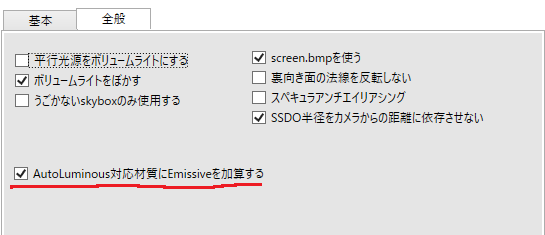
補足しておきますと、この設定を行っただけではAutoLuminousを普通に入れた時のように派手に物体から光があふれだしたりはしません。あくまでマテリアルEmissiveの値が加算されるだけなので、他のポストエフェクトを全く入れない状態では物体の色が白っぽくなるだけです。
sdPBR.pmxのAL明るく(暗く)モーフを操作するとAutoLuminous由来の輝度の加算値に倍率を掛ける事ができます。sdDiffusionやsdCrossFilterでの光の溢れ方が物足りない場合は明るくしましょう。sdDiffusion,sdCrossFilterを使って本家AutoLuminousくらい派手に光らせようとするとAL明るくモーフを+0.5～0.6くらいにはしないと物足りないかなと思います。
sdDiffusionよりも本家AutoLuminousを使いたいんだけど…という場合はチェックを外すかAL暗くモーフを上げると良いでしょう。
sdPBRは輝度1.0より大きい部分を切り捨てずに計算する、いわゆるHDR(High Dynamic Range)レンダリングを行っています。なんか難しそうですが、ちょっと聞いて下さいよ。
まあHDR対応ディスプレイなんか持ってないし俺には関係ないやという人も多いでしょう、ていうか僕もそうですが、実はHDR対応ディスプレイを持っていない人にこそ、HDRレンダリングの後のポストエフェクトはご利益があるんです。だってそうでしょう、HDR対応ディスプレイがあるんだったらレンダリングした物を普通にそのままドンと出せば良いんですから。みんなのSDR(Standard Dynamic Range)ディスプレイでHDRコンテンツをなるべく雰囲気を損なわず(本物はショップの店頭でしか見たことが無いですが)に出力する事が出来ればなぁ、というニーズのための工夫が、sdToneMapperであり、次に説明するsdEyeAdaptationだったりします。
さて、sdPBRを使うと、それだけでMMDは勝手にHDRレンダリングをします。HDRレンダリングをしたのはいいんですが、そのままでは輝度1より大きい部分がどう扱われるかというと実はただ「輝度MAXです」として輝度1.0と同じように表示されるだけです。捨てちゃうのは勿体ないので「めっちゃ明るいところがありまっせ！ここ！ここでっせ！」と強調するエフェクトが、そぼろ様作のAutoLuminousや後で説明するsdDiffusionなどだったりするわけですが、他にも輝度1より明るい部分を活用する方法がありまして、それがsdToneMapperを使ったトーンマッピングという方法です。
sdToneMapperの使用法は非常に簡単で、posteffect\sdToneMapper.xをMMDへドロップしてそれだけです。
それだけで、ただ切り捨てられるだけだった高輝度の部分に込められた情報が輝度1.0未満の部分に還流します。逆に低輝度領域の情報の一部はどうしても欠落します。難しい言い方をしていますが要するになんだか絵が引き締まっていい感じになります
実際にMMDで出力した例を見てみましょう
口絵には、とろぽっぷ様作 龍田改二をお借りしました。ニコニ立体で公開されています！
左がトーンマッピングなし、右がありです。左は煙ったようなコントラストの低い絵になっていますが、右は肌色がより肌色らしくなり、背景と比べて人物がくっきりと目立ちます。左ではどぎつい空色も右では落ち着いた雰囲気になっています。
sdToneMapperが何をしているのかというと、Krzysztof Narkowicz氏によって公開されているACESトーンマッピングの近似法を用いて輝度1より高い輝度を持った部分を輝度1未満に丸めこむ作業をしています。下のグラフのように、元の輝度が1.0の時、出力は0.8になり、元の輝度が高くなっても出力は1.0に漸近するだけで1.0を超えません。(輝度はリニア色空間で表現されています)
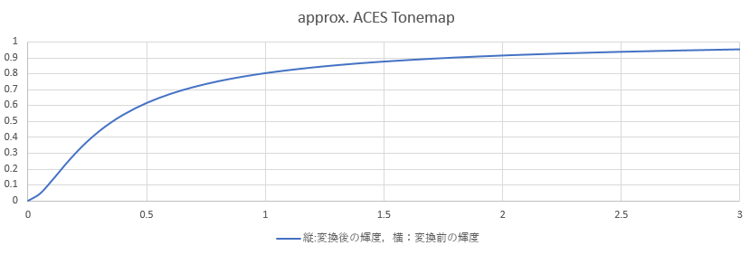
こんな曲線に当てはめて、ただ輝度を変換する事がそんなに大事なのか？と思うかもしれません。しかし、これはとても重要です。映画をアナログのフィルムに記録して上映する事を想像して頂きたいんですが、カメラに入ってくる被写体の輝度には上限はほぼありません。一方で、映画のスクリーンに映し出される画面の明るさは映写機のランプという上限が有ります。つまり、「輝度に上限のない被写体の輝度→上映時のスクリーンの輝度」という輝度の変換(=トーンマッピング)が記録用フィルムを介して行われている事になります。見栄えの良いトーンマッピングを行うには映画産業の長年のノウハウが蓄積されたフィルムに倣えば良い、という事で、ACESトーンマッピングはまさにこの、映画のフィルム由来のトーンマッピングを模した処理を行います。分かりやすく大げさに言うと貴方のMMD作品を映画のような画質にするための、最も簡単で重要な第一歩なのです。
ところで、sdToneMapperを通すと述べた通りですが画面の輝度1以上の部分が無くなります。このため高輝度部分を利用するエフェクトと併用する時には表示順に注意が必要になります(AutoLuminous,msPowerDiffusion,後述のsdEyeAdaptation,sdDiffusionなど)
ここでこだわる方は「AutoLuminousを使った場合とsdToneMapperを使った場合はどっちが本当の絵なんだろう？」「併用しても矛盾は無いの？」と思うかもしれませんが、安心してください。身も蓋もない言い方をするとどっちもウソなので片方だけでも一緒に使ってもウソです。本物はどこにあるのかというとHDR対応ディスプレイの中にしかありません。はい。ですが、HDRレンダリングをしてはいても、特にHDR対応ディスプレイ用の出力はしていないので、本物を確認できません。本物を取り出すための方法は…僕がHDR対応ディスプレイを持ってないので調べてないんだな、これが。
ACES以外にもいくつかのトーンマッピング関数が入ってます。他の色味も試してみたいという時はposteffect/tonemapperフォルダの他のエフェクトファイルをドロップして試してみてください。
興奮すると6倍になる人体の器官はなんでしょうか？
そう、瞳孔です。セクハラではありません。人間の目は、視界がまぶしくなると瞳孔が収縮して眼球内に光を取り込む量が減少して視細胞を保護し、逆に視界が暗い時や興奮した時(戦闘モードに入った時)などには必要な視覚情報をより多く得るために瞳孔が散大して眼球内に光を取り込む量が増大します。
皆さんがMMDで作品を作っている時、ライトの輝度の範囲がより自由なHDRレンダリングを行うとシーン内の輝度が非常に高くなって画面が白飛びしてしまったり逆に輝度を下げようとすると黒潰れしてしまったりという事があると思います。特に(sdPBRの付属skyboxがそうなんですが)HDR画像をskyboxに設定していると環境色だけでもかなり高輝度になり、モデルを見る角度によってシーンの明るさが全然違う！という事に頭を抱えることもあると思います。
そこで、sdEyeAdaptaionによって人間の目の明順応・暗順応をシミュレートする事で、シーン内の輝度が極端に上がった時は全体的な輝度を下げる(明順応)、逆にシーン内の輝度が極端に下がった時は全体的な輝度が上がる(暗順応)ようになり、ライティングの自由度を担保しつつ絵作りのコントロールのしやすさを取り戻すことができます。カメラのAutoExposure(自動露出補正)と同様の働きをします。
Ver.4.30でsdEyeAdaptation2が出来ました。以前はパラメータの数をあまり多くせずに直感的に使えるようにと、あえていい加減な作りになっていましたが、2はもうちょっと本格的な作りになり、絵作りに活かせる頼もしい奴に成長しました。この章ではsdEyeAdaptation2について説明します。従来のsdEyeAdaptationについてはリファレンスをお読みください。
使い方としてはsdEyeAdaptation2.xとsdEyeAdaptation2Controller.pmxをMMDへドロップするだけです。コントローラのモーフが0にセットされている場合はデフォルト値がセットされているとみなされます。デフォルト値がモーフの値幾つ相当に設定されているかはパラメータ解説に書いてあります。書いてない場合は0扱いという事で。
sdEyeAdaptation2.xの描画順はトーンマッパーより必ず前にしてください。より細かく言うと、sdSSGIやsdSSSSSなどシーン自体に掛かるエフェクトよりは後、sdDiffusionやsdHexDoFなどカメラ由来のエフェクトよりは前にするのが良いでしょう。
一応ドロップするだけで、カメラが太陽の方を向くと画面全体が暗くなったり、暗がりの方を向くと画面全体が明るくなりますが、それだけでは却って絵が変になってしまう事もあるでしょうから、いくつかTipsを書いておきます。
ヒストグラムモーフを上げると調整前の画面の輝度の分布を画面の下の方に表示できます。ヒストグラムのモコモコ動いてる山が輝度の分布を示しており、左の方に低い輝度、右の方に高い輝度を持ったピクセルの分布を表しています。2本の白い棒は輝度の基準であり、左が輝度1/1024(-10EVすると輝度1になる)、右が輝度1の明るさに相当します。横軸は輝度の対数に比例しています。
ピョコピョコ動く青い棒はシーンの平均輝度、青に比べると滑らかに動くピンクの棒は明暗順応がどのくらい完了したかを示しています。ピンクと青の棒が同じ地点にある時、明暗順応が完了している事を示します。
薄い緑の領域として示されているのは調整後の画面の輝度が1/1024～1.0の範囲になる部分です。この緑の領域にヒストグラムの山が大体納められていれば調整後に白飛び・黒潰れがあまり起こらず、見ていて心地の良い絵になりやすいです。口絵の例では山の右端が少し緑の領域からはみ出てますが、背景の照明装置の装飾として出ている光の筋や鋭いスペキュラハイライトなど、明るくて見えて当然な部分ですから、白飛びすると不快に見える箇所については概ね緑の領域内に収まっていると考えられそうです。
デフォルトの設定では調整後の輝度は18%グレーに合わせられます。写真の露出合わせでは照明済みの環境に置いた反射率18%の灰色のカードを映しながら露出補正をすることが一般的だそうですが、シーンで表現している内容によっては敢えてそれより上下させたい事も有りますから、そういった場合には順応後の明るさモーフでコントロールしてください。
中心優先モーフを上げると、画面の中央付近に映っている物体ほど高いウェイトを付けて輝度を優先的に採用するようにできます。一票の格差モーフを上げるとどこがどのくらいウェイトを持っているのか(白いほど高いウェイトを持つ)判別できます。
潰れチェッカーモーフを上げると、調整後の輝度が1/1024以下になっている部分を青、1.0以上になっている部分を赤で表示します。黒潰れ・白飛びのリスクが高い領域という事になります。キャラクターの顔などディテールを見せたいところに潰れが発生していないか一目で分かります。これはsdEyeAdaptation2を適用した直後の状態を見ているにすぎないので、後のトーンマッピングなどの結果によってはリカバーできる事もあります。特に、調整前のコントラスト比が大きい場合はかならず何処かが潰れますが、潰れが意図通りではない場合は照明を見直すかカラーグレーディングで補正するかしましょう。
デフォルトでは明暗順応は時間的にラグを持たせて進むので、静止画に出力した時に明るさが意図しない状態になるかもれません。リセットモーフを0.5より大きく設定すると、明暗順応が完了した状態に強制的にセットできます。静止画に出力したい時に役立つでしょう。
両方抑えるには照明を見直してコントラストを抑えるしかないのですが、片方だけ抑えるのであれば、得票率上限/下限モーフを両方とも0か1にセットすれば可能です。0にセットすると黒潰れはほぼ無くなり、1をセットすると白飛びはほぼ無くなります。良い絵作りになるかと言うとそうでもないはずですが、そういう気分の時もあるでしょう。
どのエフェクトでもそうですけど、EyeAdaptationは必ずしも必要なエフェクトではありません。UEやUnityのようなゲーム用途であればカメラが暗所に入ろうとするのか明るい所に居るのか決め打ちできない事が多々ありますから、HDRレンダリングが前提の場合、このエフェクトのような仕組みがほぼ必須である事は分かりますが、MMDではコンテンツの製作者がどういうタイミングでどういう照明環境にカメラが居るのか事前に把握できるので、EyeAdaptationの仕組み自体必須ではありません。
| 左上：順応についての設定 | |
| 順応後の明るさ | 明順応・暗順応が完了した場合のシーンの平均輝度をリニアsRGBで設定します。デフォルトでは0.18(18%グレー相当)です。 |
| 明順応/暗順応速度 | 1秒あたりに移動するEV値の上限を指定します。0.1が指定されると1秒ごとに最大±1EV(画面の輝度は2倍/半分)になり、0.2が指定されると最大±2EV(画面の輝度は最大で4倍/4分の1)になります。デフォルト値は明順応速度が0.3、暗順応速度が0.1です。普通のヒトの目より 随分早いですが、ヒトの目通りにすると暗順応を待っている間に動画が終わったりしますので… |
| 明順応/暗順応しない | モーフが各々0の時はEV値を±10の範囲で調整しますが、1にすると全く調整しなくなります。モーフの値を0.1上げるごとに調整範囲が1EVずつ狭まります。 |
| 右上：シーンの平均輝度の取得について設定 | |
| 中心優先 | 画面の中心付近の輝度をシーンの平均輝度の算出の際により重みを与えます。モーフの値が0の時は画面のどこでも同じ重みを持たせます。一票の格差モーフで画面のどこをどれだけ重視して平均値を算出するのか視覚化できます |
| アクセ中心 | 上記の「画面の中心」をアクセサリ(sdEyeAdaptation2.x)の位置にセットします。例えば、モデルの頭ボーンを外部親に設定すると、モデルの顔付近の明るさを重点的に評価するようになります |
| 中心X±/Y± | 上記の「画面の中心」を動かせます。X+で右、Y+で下に動きます |
| 上限/下限得票率 | ヒストグラムを参照して下から何%の所を平均とするのか、という点を上限と下限の2点で設定します。2点の平均を最終的なシーンの平均輝度として扱います。デフォルトでは下限が0.7、上限が0.9です。上限が下限より低く設定されている時は下限が上限に合わせられます。 |
| 左下：その他の設定 | |
| ヒストグラム | 画面の輝度についてのヒストグラムを表示します。見方は先述の通りです。 |
| 輝度計 | 画面の輝度の分布を表示します。ヒストグラムの棒の色と一致していますが、輝度1.0未満の部分は暗めに表示されます。 |
| 潰れチェッカー | 調整後の輝度が1/1024未満の部分は黒潰れのリスクありとして青で、1.0以上の部分は白飛びの恐れありとして赤で表示します。 |
| 一票の格差 | 中心優先モーフなどで制御した平均輝度算出時のウェイトを表示します。白く明るい所ほど高いウェイトを持ちます。 |
| 比較モード | 輝度の調整前の状態を画面の左、調整後の状態を右に表示して、比較できるようになります。 |
| リセット | このモーフを0.5以上にセットすると画面を明順応・暗順応が完了した状態にします。 |
Version2.00より、sdSSRが2になり、マテリアルの情報を読み取って反射率に反映するようになり、よりリアルな反射をするようにしたつもりです。映り込みがコントロールしづらいとか重すぎるという場合や、sdPBR自体は使わないけどSSRだけ使いたいという場合従来のsdSSRをご使用ください
反射による映り込みを近似的に表現するポストエフェクトです。重い割にあくまで近似的なのであんまり精巧で高品質な物は期待なさらないでください。これによって作られる床の効果は仕事をするフリをする床でしかありません。ikPolishShader、ray-mmd、KrShaderSystemなどSSRを組み込んだシェーダは知っていましたが、ビームマンさんが単体で使えるSSRエフェクトを大昔から公開されていた事に気づいて驚きました。でも、とりあえず両方使ってみてシーンにマッチすると思える方を選べるのはいいことでしょう！
sdSSR2の使用法も、とりあえず何でもかんでもテカテカに反射します、という状態で良ければ、ただsdSSR2.xをMMDにドロップするだけです
もちろん映り込みを入れたいものとそうでないものの区別はあるでしょうから、映り込みを入れたくない物体にはMMEffectメニューの「エフェクト割り当て」ダイアログから「sdSSRMask」タブを選び、sdSSR2_No.fxを割り当ててください。
※sdPBRのマテリアルが割り当てられていない物体からは反射率の推定ができないので正しく映り込みが表現できません。そうしたsdPBRマテリアル未割当の物体の描画時にノイズが乗る場合は、明示的にsdSSR2_No.fxをsdSSRMaskタブで割り当てるようにしてください。
sdSSR2ではマテリアルのroughness値などを読み取って動作するので、反射を起こす物体がツルツルした金属なのか、木材なのかといった表面の材質によって反射の具合を変えますが、意図的に反射率を上げ下げしたい時は、アクセサリのYパラメータを±1の範囲でいじってみてください。-1を指定すると反射が全く起こらなくなり、1を指定すると反射率が+100%(2倍)として計算されます
マテリアルのroughnessが高かったり、metallicではない材質の場合、映り込みが分かりづらいです。現実でもその通りですから、それでいいんじゃないかと思います
ところでSSRというのは超スーパーレアではなくてScreen Space Reflectionの略です。スクリーンに映っている情報から反射を表現する、と。「スクリーンに映っている情報から」というところがキモでして、元々スクリーンに映っていないものは反射の結果にはまったく反映されないんです。ですから、SSRの無い状態でパンツが映ってなかったら、SSRをオンにしてもパンツは映り込みません。「床にパンツが映り込んでいるように見える」という意見が届いた場合、その人物の脳内にしかパンツは映っていないので、そういう人物を鑑別するリトマス試験紙のように機能します。凄いですね！
それはそうと画面に映っていない物は表示できないため、基本的には地面に対して末広がりでなおかつ凸型の物体しか正しく描けません。SSRの技術デモ画像なんかを見ると大体床の方向にはうまいこと平たい部分を向けていたり凹んだ部分を配置してない物体しか使われてなかったりします。MMDで描きたい人物なんかは二本以上の足で立っていることがほとんどですから、「足の間」が存在します。ここが実はあんまり上手く描けない。なぜなら足の間の地面には人物の背中に隠れた光景が映り込むハズだからです。なので足の間は無かったことにしようとなんとかボカして描きますから、まあそういうもんだと思ってください。
ところで反射エフェクトといえばみんな大好きWorkingFloorですが、アレはガチで「別アングルから描いたものを反転して貼りつけている」のです。仕組みが全く違うんですね。というわけでVersion 3.20よりsdPlanarReflectionが追加されたのでそちらをどうぞ。
既にありそうなものですが、普通のラプラシアンフィルタによって画像を先鋭化するエフェクトです。
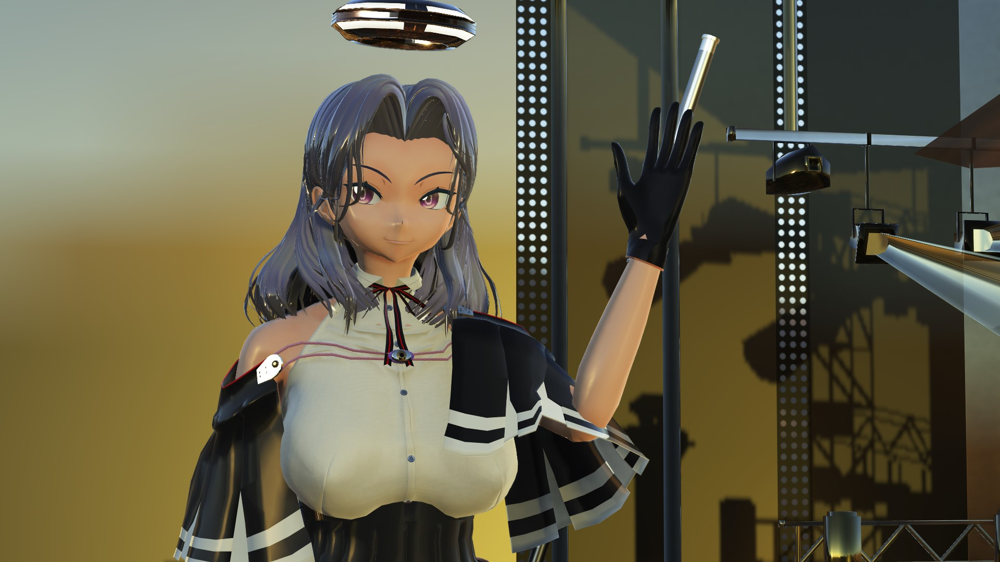 unsharpMaskオフ |
unsharpMaskオン |
アクセサリのSiパラメータでシャープ具合を調節できます
こんなことを言うのもなんですが、作った本人は、あんまり使ってません。エッジがケバ立つと見ていて心地よい状態にならないという主観的な理由なんですが、特定の使える状況というのはあるかもしれませんし、エッジがパキッとしていた方が好ましい絵作りと感じる方もいるでしょうから、作っておきました。
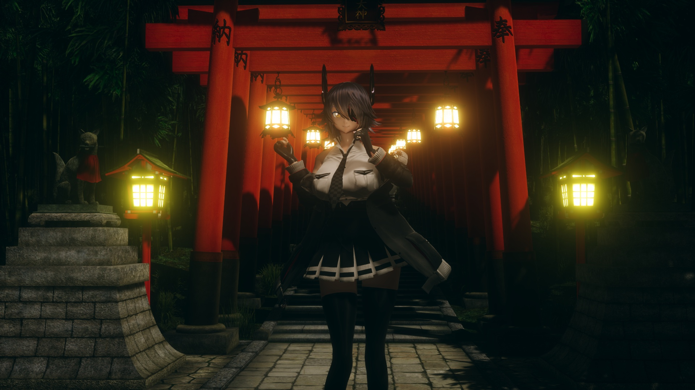 SSGIオフ |
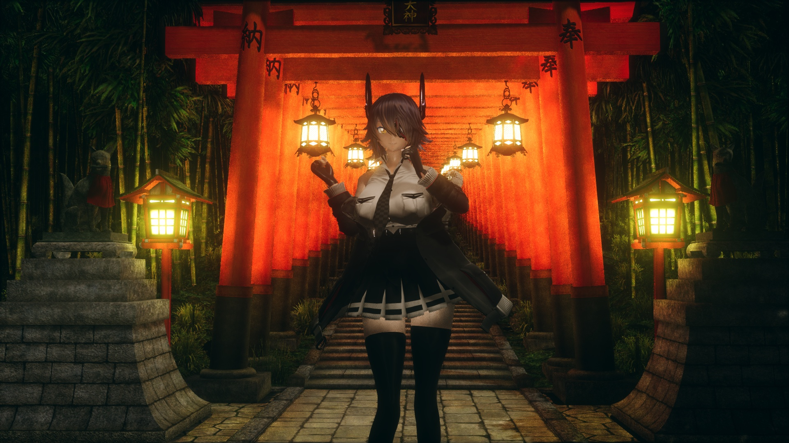 SSGIオン |
Screen Space Global Illumination略してSSGIを行うエフェクトです。画面内に映っている明るい物体が照明になって周囲を照らす事で間接照明の効果を表現する、非物理ベースのエフェクトです。sdSSGI3ではGIの効果をより鮮明な物に出来るよう、SSAO(Screen Space Ambient Occlusion)の効果も内蔵しました。sdPBR自体にもSSAOは組み込まれていますが、GI計算時に更にAOを付与することでよりリッチな見た目を得られたと思います。ていうかsdPBRにAOは内蔵されていると散々言ってもなお他のSSAO系のポストプロセスを嬉々として掛ける人が後を絶ちません。キミらそんなにSSAOが好きなのか！好きなんだったら二重に掛かってたら二倍嬉しいよなァ？そういうもんだろ？
しかし、所詮は画面内で完結しているエフェクトなので物体間の位置関係などはあまり正確に把握できない状態で計算せざるを得ず、画面の外に明るい部分が出ていくと即座に明かりが消えてしまって、ちょっと不自然になってしまうなど、どうしても使いどころは限られます。3になって大分良い所まで来たとは思いますが、色々トレードオフになっている物はあります。
こういう光が広がっていく雰囲気のエフェクトというと、ましまし氏作msPowerDiffusionなどのディフュージョン系エフェクトが思い浮かぶ方も多いでしょうし、sdPBRにもsdDiffusionというそのまんまなエフェクトが同梱されました。これらはカメラ側で起こっている現象をシミュレートしている物であり、sdSSGIはMMDの世界の中での光の相互反射を表現しているエフェクトですから、原理から違うので併用しても特に問題はありません。ただし、一緒に使ってコントロールしやすいかというとまた別の問題です。
パーティクルなど発光体が多数出るシーンや、夜のシーンで背景オブジェクトに配置された窓の光などから、背景オブジェクトそのものが照明される状況などいちいち光源を配置するのが煩雑な場合などに使える事も有ります。
sdPBR専用のエフェクトで、sdPBRconfigの設定で追加ライトを使用する設定にしておく必要が有ります。
詳細はパラメータ解説をどうぞ
コントローラとしてsdSSGI3Controller.pmxもドロップすると表情モーフで効果を好きに調整できます。また、非常に重いのでsdSSGI3.fx内の先頭付近にいじって軽くするための設定もあります。
明るさ+/-モーフで光の強さ、半径+/-モーフで光の広がる範囲を指定できます。
輝度閾値モーフを上げると輝度が高い所からの光の拡散のみを扱うようになり、低輝度の物体からの寄与は無視するようになります。見た目にかなり影響します。SSGIによって拡散された光を用いたシェーディングはあくまで近似的な物になります。このため、低輝度の物体同士の光も積極的に考慮すると、不正確なシェーディングの行われた部分が画面の大半を占める事になり、見た目に不自然になりやすいです。
輝度制限モーフを上げると、輝度が一定以上高いピクセルからの輝度は同じとみなします。鋭いスペキュラハイライトなど点状に超高輝度のピクセルがチラチラと表示される場合に、それが拡散されると見た目にうるさい事が有るので、このモーフを上げると対策できる事が有ります。
SSAOの効果はsdPBRに内蔵されている分だけで十分だから必要ない、という場合はSSAO薄くモーフを1にするとこのエフェクトに内蔵されている分SSAOの効果は無効に出来ます。このAOの計算はGIの計算の「ついで」に行われている程度なので速度面でのロスはほぼありません。
描画順については、最初の方にしておくのが良いと思います。MMDの背景(B)-アクセサリ設定メニューより、モデルより先に表示される設定にしておくと追加ライトによるライティングの前にSSGIが実行されます。個人的には追加ライトによるライティング結果をSSGIでさらに広げない方がコントロールしやすく思えるケースが多かったです。特に、モデルより後の表示順で設定されているとボリュームライトによる煙っている部分がAO効果で黒く抜けるので不自然になりやすいですが、商業作品としてのゲームやムービーなどでの実装を見るとそのような一見誤ったエフェクトの適用順を行っている例を意外に見かけます。つまり、絵作りによって変えて良いのです。AOをAO薄くモーフを上げる事で無効にしつつ追加ライトより後掛けする、など組み合わせを試してより心地よい順序で掛けるのが良いでしょう。
ダンスMMDなど主役モデルは常に動き回ってチラつきが目立つし、仮にそんなに動いて無くてもGIの効果自体分かりづらいので、背景にだけSSGIを掛けたい、という場合はMMEffectダイアログのsdSSGI3タブを開いて、主役モデルのpmxファイルにsdSSGI3_No.fxを割り当ててください。主役モデルが画面上の一番手前に表示されるピクセルについてはSSGIの影響を受けなくなります。
基本的に半径-モーフを上げて効果範囲を絞ると軽くなる傾向がありますが、それでも重すぎて使い物にならないとか、残像が気になって仕方がないという場合は、sdSSGI3.fxの先頭付近にその辺をいじるための設定法が書いてありますので、読んでいじってみてください。
sdPBRのデフォルトの設定では、そぼろ様作AutoLuminousに対応した材質の場合、マテリアルのemissive値が加算されるようになってますから、AutoLuminousそのものを入れてなくてもAutoLuminousによる発光はこのエフェクトやsdDiffusionによって拡散させる事が可能です。この効果はsdPBR.pmxのAL明るく/暗くモーフで倍率を掛けられるようになっています。
最も重要な事は無理に使わないという事です。重さも考えるとライトを普通に複数置いた方が見た目が良くなる可能性は十分あります。身も蓋も無いなあ。
Fast approximate anti-aliasing (FXAA)の技法を用いてポリゴンのエッジなどに起因するギザギザした感じ(ジャギー)を低減します。
MMDにも標準でアンチエイリアシング(AA)の機能がついており、表示(V)メニューのアンチエイリアス(H)から設定できますが、建前上はMMDのAAはオフにして、こちらのsdFXAA.xを使うのが良い見た目を得られ、しかも高速です。建前上などと付けているのは、確かに理屈の上ではそうなんですが、見た目で好ましいと思える方を選択してもらうのが良いと思いますから、片方だけ使ってもいいし両方とも使っても良いと思いますし、なんなら両方切ってもいいと思います。
AAなし |
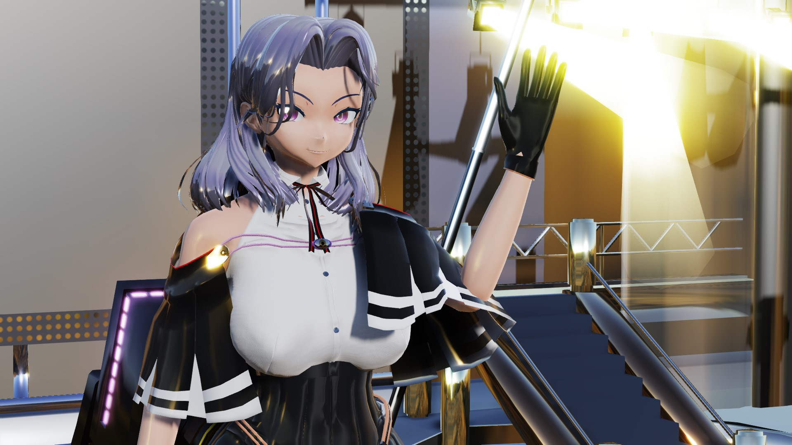 sdFXAAのみ |
sdFXAA+MMD標準AA併用 |
具体的にMMD標準のAAを入れると何がダメなのかというと、画面の色情報にはAAが無事に掛かるんですが、シャドウマップやSSDOなどの内部的な計算にはAAが掛からない(掛けると計算結果が無茶苦茶になる)ので、それらの計算結果と画面の色情報が完全には一致しなくなり、ポリゴンとシャドウマップによる影が落ちている部分の境界などにほんのわずかにノイズが載るといった不具合が生じます(画像の中央付近のケープの縁にその現象がひっそり現れています)。非常に細かい所なのでVersion 1.70まで放置しまくっていたんですが、そういういい加減な部分の積み重ねでトータルの画質が悪くなるとイヤなので地道に修正をしていきました。
この方法は法線や奥行、過去のフレームの情報などを一切使わず、画面の現フレームの色情報しか要求しないので、ポストエフェクトとして実装するのが容易で、PCだけでなくXboxなどのゲーム機やモバイル機器向けのコードも併せて公開されており、とにかく組み込みが非常に簡単です。その上、軽くてそれなりに効果があるという事で随所で使われています。
MMEとしての組み込みにあたってはTimothy Lottes氏により作成され、NVidia社から3-clause BSD licenseで公開されているモジュールをそのままありがたく使わせていただいてますが、カスタマイズ用の定数をfxファイルの先頭に並べるなど幾らか使いやすくしたつもりです。
とはいっても特に中をいじらずにsdFXAA.xだけドロップすれば普通に使えますし、少なくとも僕から見て最適であると思えるパラメータを入れてあります。作品によっては「ちょっとボケすぎじゃない？」と思う事もあるでしょうから、そういう時はsdFXAA.fxの中を覗いてみてください。
画面を構成するRGBカラーのうちG(緑)を1フレーム、B(青)を2フレーム遅らせて表示することで、色ずれをおこしつつモーションブラーを掛けたような効果を施します。動きベクトルなどは何も得ていないのであくまでモーションブラー「風」ですから見た目を滑らかにする効果は無いんですが、その分軽いです。
なお、このエフェクトは以前のフレームの情報を使うので、静止画で出力すると意図通りの見た目をおそらく得られませんのでご注意ください。また、実時間ではなく表示フレームを単位として動作するので60fpsで出力した時と30fpsで出力した時と編集時に画面で見ている時で見た目が微妙に変わります。
カメラのディフュージョンフィルタを模した光の拡散を表現します
sdPBRの特徴の一つであるHDRレンダリングを前提とした拡散表現をしますので、輝度5の物体(左の球体)からは5だけの光を、輝度100(右の球体)の物体からは100の光を拡散できます。
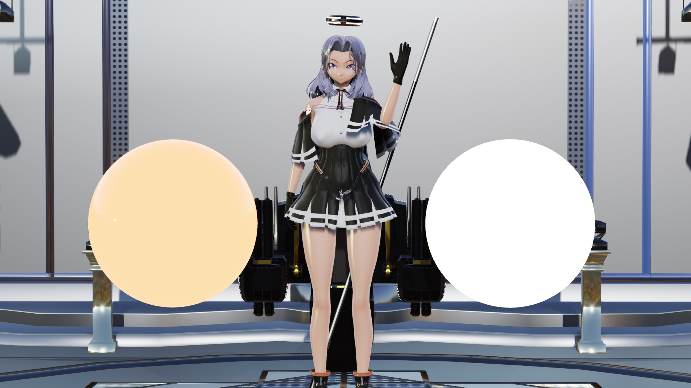 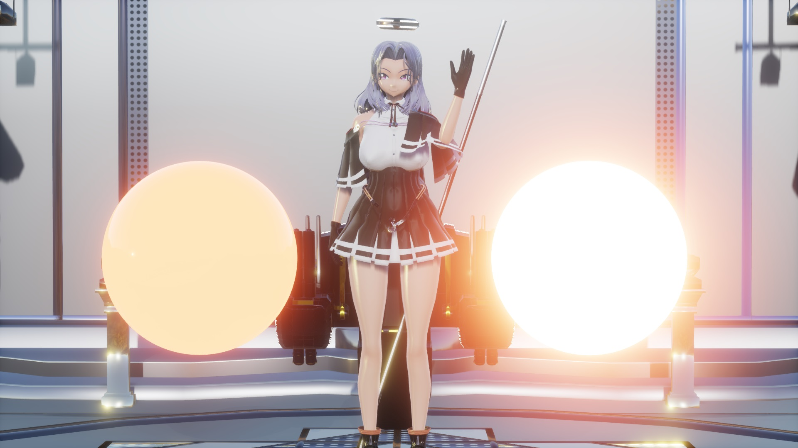
左:sdDiffusion 無効 / 右:sdDiffusion 有効
絵を見ると5からの光と100からの光ってどうみても20倍っぽくなくて、せいぜい4～5倍じゃね？と思うかもしれませんが、その見立ては正しい。なぜならsdPBRでは輝度は物理的な輝度に比例したリニア色空間での輝度として取り扱うので、それが20倍になっているというわけで、20^(1/2.2)としてsRGBガンマでの輝度信号の値に直すと約4倍なんですね。
何からでも一定の割合の光が拡散していくのが物理的には正しいと思うのですが、「被写界深度によるボケの効果を意図的に強調した表現をしたい」といった場合のために、特定の物体からの光は拡散しない事もできます。MMEffectのエフェクト設定ダイアログから、sdDiffusionタブを選択し、Mask_No.fxを設定すると、その物体からは光が拡散されなくなります。Mask_Over.fxを設定すると、その物体には他の物体から拡散されてきた光も被らなくなります(いずれもsdDiffusionをカメラのフィルタと捉えると物理的におかしな状態です)
アクセサリのX,Y,ZパラメータでそれぞれR,G,Bを強調して拡散するようになります。Siパラメータで拡散した光の全体的な強さを指定できます。
おまけとして(物理的にどうなのかという事は置いといて)拡散の方向を変化させられるディフュージョンフィルタというものもご用意しました。こちらはRxパラメータで拡散の方向を変えられます
カメラのクロスフィルタを模した光芒を表現します。高輝度の部分から光芒が見えるようになります。なかなか重いです。
画面の高輝度部分から光芒を出すようになります。これもHDRレンダリングを前提にしているので、輝度1以上になれば何でも発光、という扱いにすると画面が真っ白になったりします。ですので、光芒が見え始める輝度の閾値や光芒の強さについてある程度カスタマイズできるようにしており、それらの項目をシーンごとに調整することがほぼ前提となっています

左:sdCrossFilter 無効 / 右:sdCrossFilter 有効
光芒が露骨に虹色になるのが嫌な場合は何パターンか光芒用のテクスチャを用意してありますので、各自で差し替えてみてください。この光芒用のテクスチャの作成用ツールはtool\StreakKernelとして同梱されています。カメラの開口部を模したマスク画像から光芒テクスチャを作る事が出来ます。
画面に表示されている色のおおまかな統計情報を表示します。軽くはないのですが使用中の色情報のサンプリング間隔が粗いのであくまで大まかな情報ですが、それでも無いよりは随分良いです
棒グラフが3段並び、上から色相・彩度・輝度についてのグラフになります。各段は基本的に12本の棒で構成されますが、輝度1.0を超える部分については13本目以降の棒が出ます
上段の色相グラフを見ると、シーン全体の色使いを把握できます。色彩は特定の感情と結びつきが有る、というプルチックの説(Wikipediaへのリンクです)などもありますから、シーンの雰囲気にそぐわない色使いになっていないか、容易に調べられます
中段が彩度グラフを見ればシーンが過度にケバケバしい色遣いになっていないかチェックできます
下段の輝度グラフで白飛び・黒潰れが生じていないかチェックできます
カラーグレーディングを行うためのMMEです。HDRではなく輝度が0～1の範囲に収められた後の状態(SDR)からカラーグレーディングを行うためのエフェクトなのでsdColorGradingSDR.xの表示順序はsdToneMapperより後、sdFXAAより前に指定しましょう。
入れるだけの状態だと画面が真っ黒になるので、コントローラであるsdColorGradingSDRController.pmxもドロップしたあと、sdColorGradingSDR_default.vmdをコントローラに読み込んでください。色温度による補正が有効になるのでデフォルト設定を読み込むだけでもわずかに色が変わります(色温度による補正の効き具合は温度補正強さモーフで制御できます
一応のたたき台となりそうな設定としてsdColorGradingSDR_Osusume.vmdを入れておきましたので、まずそれを入れた状態とsdColorGradingSDRを入れていない状態で比較した画像をご覧ください
左半分がカラーグレーディング前、右半分がカラーグレーディング後の画像です。比較モードモーフでカラーグレーディングの前後を比較できます。
効き目が分かりやすいようにかなり濃い目ですが、暗い色ではブルーが強調され、中間色ではオレンジが強調されて、人物の肌色が良くなり、背景も空色がクッキリする設定となっています。実用上は後述の方法で薄めた方がよいでしょう。
コントローラをドロップした時の説明文にも有りますが、Liftで影・暗い部分の色、Gammaで中間色、Gainでハイライトの色をコントロールできます。他に、Presatで全体的な彩度や色相のコントロール、そして色温度がコントロール出来ます
とりあえず、おすすめ設定からGammaH、LiftHをいじると全体的な色彩を程よくコントロールできると思います。濃くしたり薄くしたりしたいときはGammaS、LiftSを変えましょう
それから、CLUT見るモーフを上げるとikeno氏作ikCLUTなどで使用できるLUTを表示します。MMDの静止画出力で横1024以上に設定してpngで出力し、左上1024x32pxの範囲をトリミングするとikCLUTから使用できます。左上のLUT表示が他のポストエフェクトなどから影響を受けないように表示順には気を付けてください
色遣いは良くなったけど絵が濃すぎる気がするときは、sdPBRのSSDO濃さを低く設定してみてください。色使いが濃くなってくるとSSDOの濃さが悪目立ちする可能性が有ります。
要するにikeno氏作ikClutやおたもん氏作o_selfOverlayなどを手動で出来るようにしたという程度の物なので、そうしたエフェクトですでに愛用している物があればわざわざ使わなくても良いですね
カメラ由来のノイズを付加し、ビンテージ感のある雰囲気を絵にもたらします。具体的にはカメラの口径やレンズ・フィルム由来の以下の効果を計算します。屈折率の変化に対する収差の加減が正確ではないので、物理的に正しい表現かと言われると怪しい所も有りますが、いくらか雰囲気は出ていると思います。
製品として出回っているカメラ・レンズであればそうしたレンズの収差による映像への影響が最小限になるように調整されているので、このエフェクトが表現するように大げさな収差の影響は観察できません。それこそ昔流行った使い捨てカメラ(レンズ付きフィルム)のレンズですら、このエフェクトのデフォルト設定よりずっとマシな画質です。しかし、色ズレとかビネットとかをゴテゴテに付けたい気分の時もあるでしょう。
sdExpensiveLens.xを放り込むだけでも露骨に効果がありますが、微調整の指針としては大体以下のような感じになると思います。sdExpensiveLensController.pmxもドロップした上で以下のように調整してみてください。
| 画面の中心が出っ張ったり凹んだりした感じにしたい | 表情操作パネル左上の樽型・糸巻収差をいじりましょう |
| 画面が傾いたような歪みを付けたい | 表情操作パネル左上の円周歪みをいじりましょう |
| 色ズレの度合いを調整したい | 表情操作パネル右上の倍率色収差をいじりましょう |
| 紫色が滲んでボケた感じを加減したい | 表情操作パネル右上の軸上色収差をいじりましょう |
| 画面の周囲の暗さを調節したい | 表情操作パネル左下のビネットをいじりましょう |
そぼろ氏作CheapLensと同様の表現をすることからエフェクト名が付けられていますが、こっちは計算コストが多いという事からExpensiveとなりました。エフェクト自体の品質は…使う皆さんの工夫次第です！
雲を描きます。描画順はなるべく上の方が良いでしょう。非常に重いのですが、軽いけど画質の非常に悪い状態のお試し版とかお試し設定みたいなのを付けるとみんなそれしか使ってくれないので、あえて重くても画質の良い設定にしてあります。
ソースコードの状態だと読み込み時間が非常に長いのでコンパイル済みのfxファイルになっています。もし、設定を変える必要があれば_VolumetricCloud.fxを書き換えて、fxcでコンパイルしてください。コンパイル用のバッチファイルも付けてありますので、VisualStudioCommunityとDirectXSDKがインストールされていればコンパイル出来ると思います。
sdVolumetricCloudController.xのほか、sdVolumetricCloudController.pmxもドロップすると、雲の質感などについて色々コントロールできます。パラメータのコントロールの指針としては以下のような感じになると思います。
| コシのある雲/柔らかい雲を作りたい | 分厚いコシのある雲を作りたい場合は雲濃度を上げます。また雲ぼかしは低い値にすると良いでしょう。柔らかいふんわりした雲にしたい場合はそれぞれを逆に雲濃度を低めに、雲ぼかしを大きめにすると良いです |
| 雲の配置をまばらにしたい | 雲量を下げるとまばらになります、また、雲の粗さを上げると雲の一塊が大粒になり、まばらな印象になります |
| 明るい・暗い雲にしたい | ライトH/S/Vで雲用の光源を調整できます。これらのモーフが全て0の時はMMDの照明操作で制御される平行光源と同じ明るさで照明されます。また、skyboxなどの影響を受けるので、sdPBR.pmxの暗く(明るく)/環境光暗く(明るく)/ライト暗く(明るく)モーフの影響を受けます。 |
| 雲の切れ目から光のスジとか出せないの？ | 霧効果モーフを上げると雲の密度の低い所にもある程度の水蒸気が現れて、光が散乱するようになります。その代わり、雲の形はぼんやりします。ゴッドレイ的なはっきりしたスジが欲しい場合は、このエフェクトではなく、skybox2フォルダに入っているkuraudo.pmxと平行光源のボリュームライトを使うと良いでしょう |
| 空だけ/地面だけに雲を出したい | 高さ制限モーフを調整すると雲の高さ方向の配置を変更できます |
拙作のうごく背景エフェクトに似たポストエフェクトであり、半透明な物体と相性が悪かったり、物体の輪郭付近にノイズが出るなど色々とイケてない所もあります。
思えば雲を描くエフェクトだけで5～6個くらい既に作っているような気がしますが、現状では思いつく限りのノウハウを込めて作りました。でも、所詮はポストエフェクトなので色々変な所もあります。重過ぎて使いづらいけど雲を出したいという場合は他の軽い雲エフェクトを検討してください。
竜巻を描きます。描画順はなるべく上の方が良いでしょう
posteffect/VolumetricCloudフォルダに入っており、sdTornado.xとsdTornado.pmxをそれぞれMMDにドロップして使います。質感の調整の指針などはsdVolumetricCloudとほぼ同様です。
全ての親ボーンを動かすと移動や回転をさせる事が出来ます。また、回転速度モーフを変えると自動的にY軸周りに回転させられます。竜巻の大きさ自体はサイズモーフで変更できます。0.1増やすごとに2倍になり、1.0の時1024倍(10240MMD距離≒800m)になります
光源の設定だけちょっと違う所がありまして、MMDの照明操作パネルで設定される平行光源だけでなく、内蔵されている点光源のどちらか一方を選択してライティングすることができます。光源位置ボーンを原点から動かすと、点光源による照明に切り替わり、原点に戻す(ボーンの位置をX,Y,Zとも0にする)と平行光源によるライティングになります。(残念ながら、sdPBRの追加ライトの影響は受けません)
物体をすりガラスのようにするポストエフェクトです。スクリーンスペースで屈折の表現を近似的に行う、いわゆるScreen Space Refractionの一種です。略すとSSR(Screen Space Reflection)と区別がつかないのでこういう名称にしています。SSRと同居させる事をあまり考えていないのですが、なんとなく両方一緒に使えたり使えなかったりするので上手く使える所を見極めて使いましょう。
他のポストエフェクトとはsdPBRとの併用が前提ではないのですが、このエフェクトはsdPBRのマテリアルの情報を元に動作するのでsdPBRとの併用が前提になります。
使い方ですが、まずsdPBRconfig.exeで追加ライティングのα値を細かく計算するにチェックが入っている事を確認してください。ここにチェックが入った状態でsdPBRconfig.fxsubを出力していないと正しく動作しません
次に、sdGoundGlass.xをドロップします。でもこれだけでは何も起こらないので、すりガラスにしたい物体をMMEffectダイアログのsdGGlassタブから選んで、Mask_Yes.fxを割り当てます。物体の材質が不透明な場合は効果が良くわからないので、pmxエディタなどで不透過度を下げてください。テスト用に不透過度0.1に設定されているtool/板ポリガラス.xモデルも同梱されているので、手っ取り早く試したい時にはそちらをどうぞ。
sdGGlass,sdGGZタブで忘れがちな点として、他のエフェクトのコントローラやパーティクルなどのいわゆる「連凧」の類が影響して本来ガラス状になる部分がそうならなかったり、またはその逆の事が起こり得ます。sdGGlassタブとsdGGZタブから、他のエフェクトのための.x,.pmxファイルからチェックをはずすと上手く描画が行われる事が多いようです。
すりガラスにしたい物体に対して、さらにsdPBRのマテリアルを割り当てましょう。roughnessパラメータによって曇り具合を調整できます。roughness=0の時はすりガラスではない普通に仕上げられたガラスになります。
まとめると、使い方の手順は以下のようになります
スクリーンスペースでの近似的なエフェクトなので、なんとなくガラスっぽくなる程度であって、あまり正確ではありません。画面端では効果が怪しくなったり、後ろに置いてあるガラス状にした(Mask_Yes.fxを割り当てた)物体より前に置いてある物体が映り込むなど反射なのか屈折なのか良くわからない挙動をする事があります。
また、ガラスの奥のガラスは上手く描けませんから、手前のガラスのroughnessを高くして奥のガラスをぼかすなど工夫をしてください。透明体の描画順の問題や追加ライトは2枚目以降の半透明体を照明できないなど色々ありますから、とにかく使うのに工夫が必要なのは仕方ないね。全部レイトレーシングで何でも描ける世の中になったら本気だしますからそれまでは頑張って下さい。
半透明体にまつわる問題については時々なんとかならないのか、バグではないのかと言われる事があるのですがシェーダ側では割となんともならない事が多いからこういう実装になっています。俺は悪くねぇ。
アクセサリのXパラメータを増減するとガラスを出た後の光が後ろの物体にぶつかるまでの距離を指定できます。普通はレイマーチングで求めるらしいのですがむやみに重くなるしノイズが出るので屈折してる感が出ればヨシ！ということで定数にしました。X=0の時10MMD距離となり、±1.0するごとに±10MMD距離されます。ガラスと、ガラスの奥にある物体までの距離が近い状態を描写したい時は-0.9くらいを指定すると良いでしょう。逆に、ガラスと物体までの距離が長い場合は+10、+20…と伸ばしてみてください。
アクセサリのYパラメータを加減すると、前後関係についての影響を調整できます。値を大きくすると前後関係についてはおおらかになり、-1までの負の値を指定すると前後関係について厳しくなります。
Version3.00現在、アニメーションテクスチャをマテリアルに適用した物体に対して、このエフェクトを有効にした状態で静止画に出力すると、おかしな結果になる事があるようです。そのような現象が気になる場合は、テクスチャをアニメーションしない物と差し替えた上で静止画に出力してください。
Temporal Anti-Aliasingといいまして、Temporalというのは「時間的」という程度の意味です。時間的な情報、つまり以前のフレームの情報もアンチエイリアシングのために活用し、ドット由来のギザギザ感(ジャギー)を低減します。ゲーム用途のアンチエイリアシングとしては2021年現在の主流として広く使われているそうです。前のフレームの情報を使うので静止画では原理的に使えなさそうなんですけど、なんでか静止画に出力した時にも効果が出てます。MME・MMD自体の細かい動作は僕にもよくわかってない所が多いです。
FXAAは現在のフレームの情報だけを元に動作していますが、TAAは前のフレームの情報を使って今のフレームの中の注目しているピクセルをどれだけぼかすか、という事を決めるのに使っています。なので、動画に使うと真価を発揮します。各フレーム1枚1枚の絵の良さよりも、ジリジリと動くノイズを潰すなど動きの有る絵として流暢な物を仕上げる事を優先して動きます。疑似的なモーションブラーのような効果もあって一石二鳥です。FXAAと併用しても全く問題はないのですが、FXAAと比較した場合のTAAの長所・短所について眺める事で、TAAの性格がある程度掴めると思います。
使ったときの雰囲気については実際に入れて使ってみるのが一番だと思いますが、FXAAのように「とりあえず入れとけ」と言えるほど邪魔にならないエフェクトとは毛色が違い、TAAは有能だけど働く場所を選びますから、好みが分かれるエフェクトだと思います。また、フレームレートが変わると見た目の雰囲気が微妙に変わるので、実際に出力してみないと本来の雰囲気が良くわからない事が多いですから、TAAを使う場合にはカットの最初の方が出来たら試しに出力して意図した絵が出せそうかチェックすることをお勧めします。
おすすめの描画順は普通の物体を示すアクセサリや、MMDの世界の中で起こっている事を表現するエフェクト(sdSSR,sdSSGIなど)よりは後、他のポストエフェクト(sdDiffusionなど)よりは、なるべく前です。sdFXAAはトーンマッピングまで完了している後ろの方を推奨していたのですが、sdTAAの方は前寄りになっています。この配置にすることで、roughnessの低い物体からの強いギラギラした反射がチカチカする事を抑えられます。逆に、反射がチカチカする表現を活かしたい時はsdDiffusionなどよりわざと後ろの方に配置するのも手です。参考元文献によればHDRでの動作が前提なのでトーンマップよりは前にするのが理論的には正しいそうです。
画面に放射状のぼかしを掛ける事で強いられている感じを出します。元ネタが分からない方は「強いられているんだ！」でググったりすると分かるかもしれません。僕も元ネタの放映当時(というか今も)アニメを見る習慣が無かったのでニコ動で知っただけなんですが。
アクセサリとして実装されているのでposteffect/blur/sdShiirare.xをMMDへドロップすれば一応使えます。X,Yパラメータでぼかしの中央の位置を、Zパラメータで中央付近のぼかし具合を弱めたり強めたりできます。
パラメータについて詳しくはパラメータ解説を見てください。
一方向にぼかしを掛ける事で疾走感を出します。単純なエフェクトですが重いです。
posteffect/blur/sdHashiri.xをMMDへドロップすれば使えます。ドロップするだけだと見た目に変化が無くてただ重くなるだけなので、Xパラメータでぼかし量を指定します。Xパラメータを少し(0.1～0.2程度に)上げてみてください。sdHashiriタブにマスク用のエフェクトファイルを割り当てる事で特定の物体にだけ疾走感をもたらしたりできます。
例えば先の例で龍田ちゃんだけが走っているかのようにぼかしたい場合は、MMEffectダイアログのsdHashiriタブで、龍田モデルにだけMask_On.fxを割り当て、それ以外の物体(skyboxDisplayや背景用モデル)にMask_Off.fxを割り当てるとこうなります。
龍田ちゃんが完全にボケボケになるので、Zパラメータを0.5くらいまで上げると、龍田ちゃんにカブっている所は薄まり、背景にカブっている所だけ濃いままになり、見やすい感じになります。
他のパラメータについてはパラメータ解説を見てください。
CCDセンサの欠陥の一つであるスミアを模したエフェクトです。
スミアというのは"しみ"という程度の意味の言葉ですが、CCDカメラでは構造上、超高輝度の点がフレーム内に入っている場合、その輝度が同一ラインの他のピクセルにも影響を及ぼすという欠点があります。CGではそのような事はレンダラのバグでもない限りは起きないのですが、表現として取り入れると面白い雰囲気を出せる事もあるでしょう。
posteffect/blur/sdCCDSmear.xをMMDへドロップすれば使えます。描画順はトーンマッパーの直前が良いと思われますが、そんなに正確なエフェクトでもないのでトーンマッパーより前ならわりとどこでもお好みの位置で良いと思います。
このエフェクトはシーンによってX,Yパラメータを適宜調整する必要があります。Xパラメータ+1以上の輝度を持っているピクセルからスミアが起こり、Yパラメータでスミアのゆるやかさを指定します。デフォルトのX=0,Y=0の状態では1以上の輝度を持っているピクセルから、明るさ1のスミアが溢れる事になります。
他に、Zパラメータで彩度の加減、Rxパラメータで色相の加減が出来ます。
その他のパラメータについてはパラメータ解説を見てください。
カメラのピンボケが原因で被写体がボケる事が有ります。そんな様子をMMDで再現するためのエフェクトです。被写界深度(Depth of Field, DoF)エフェクトなどとよく言われます。同様のエフェクトはikeno氏のikbokehや針金P氏のPowerDoFなど品質が良く高速・高性能なエフェクトがいっぱいあるので、作らなくていいやと思っていたのですが、六角形の大きな玉ボケを無理やりにでもいれられる物が欲しくなったので作ってしまいました。そんな動機で作っているので少々おかしくても六角形のボケがどうしても欲しいのだ、という時以外は既存の気に入った物を使うのが良いかもしれません、ハイ。とりあえずデフォルトの設定は画質優先でかなり重いので、重くて使いづらいという場合は各自sdHexDoF_common.fxsubの中をいじって軽くして下さい。
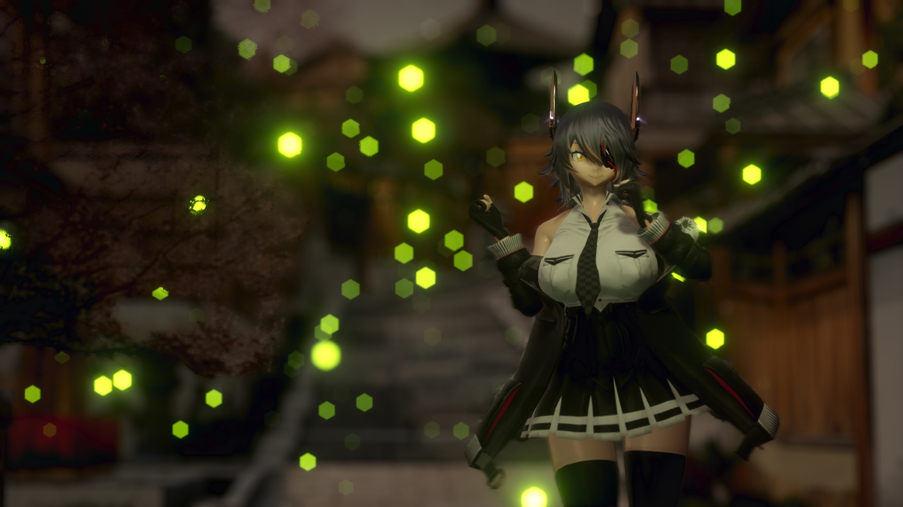
背景はムムム様作 清水風ステージをお借りしました！
ともかくこんな感じで絵作りには役立つと思います。六角形を欲張って大きくしすぎると色々と粗が目立ちますが、何がどう粗なのかというのは、ボケを大きくすれば一発で分かります。わりと実装上仕方ないので少々おかしくても画面が真っ黒になってしまう！とかMMDが落ちる！とかでもなければいちいち報告してこないように。そこをなんとか誤魔化すのがMMD作家たる皆さんの腕というものですが、皆さん変な描画結果を見つけると嬉々としてそういうエフェクトとして面白がって使いやがるので、色々活用してください。そのうち治るかもしれませんけど。
sdHexDoF.xをドロップするとなんとなくシーンがボケた感じになると思います。これではどこにピントが合ってるのか良くわからないのでsdHexDoF.xのX,Y,Zパラメータでピントを合わせたい場所の座標を指定します。
外部親にピントを合わせたいモデルの頭ボーンを設定し、Zパラメータを-1～-2くらいにして顔の前寄りに調整すると、モデルの顔に自動でピントが合うようになって便利です。また、アクセサリのSiパラメータでボケ具合を調整できます。これが一番簡単な使い方であり、既存のDoFエフェクトも大体似たような使い方が用意されていると思います。
sdHexDoFController.pmxもドロップすると色々設定が出来ます。
表情操作パネルの左上にAF/MFモードというモーフがあります。このモーフは以下のように4つのフォーカスモードの切り替えスイッチになっています
アクセサリの座標に合わせるモードについては先に述べた通りですから、以下、AF,MFモードについて説明します。
AFモードではカメラの前にある被写体に自動的にピントが合います。表情操作パネル右上にあるモーフでAFの動作について微調整が出来るようになっています
| ピント距離+/- | オートフォーカスで合わせた被写体に対してピントの合う位置をピント距離+モーフが1の時2倍にし、ピント距離-モーフが1の時半分の距離に調整します |
| 測距点↑/↓/←/→ | オートフォーカスの測距点の配置された円の位置を調整できます。円周上にある物体のうち一番近い物にフォーカスが合います |
この他、AF/MFモードモーフ自体の数値で測距円の大きさをコントロールできます。
AF/MFモードモーフを0.5以上、1未満にするとMFモードになります。MFモードではコントローラのエフェクト-ピント距離ボーンの座標の長さ(sqrt(x^2+y^2+z^2))でピント距離を決めます。XでもYでもZでも好きな軸方向へ伸ばしたら遠くへピントが合うようになります。
ピント距離+/-モーフはAFモードだけでなくどのフォーカスモードを使っていても有効です。大体の位置をボーンやアクセ・AFで決めた後にピント距離+/-モーフを動かしてグラグラと前後にピントを揺らしたりと言った事が出来ます
以上でピント合わせに3つのモードが有るという事をご説明しましたが、どこにピントがあってるのかというのはちょっと目で見るだけでは良くわかりませんから、どのモードを使うのが最適なのか掴みづらいですね。そこで、ピントがどこに合っているのか良く分かるようにするためのテストモードがあります。表情操作パネルの右下に同名のモーフがありますから、それを0より大きくするとテストモードになります
このように画面が色分けされた状態になりまして、各色が表しているのは以下の状態になります
| 白 | おおむねピントの合っている範囲です | 青 | ピントのほぼ中央付近です |
| 緑 | ピントより奥にズレており、ボケた範囲です |
| 紫 | ピントより手前にズレており、ボケた範囲です |
| 黄色 | AFモードのみ表示されます。測距円(この円上に乗った物体の一番手前にフォーカスが合う)です |
見ての通り、ikenoさんのikbokehの丸パクリと同様の色分けにしましたので、ikbokehを使った事の有る方ならすぐに使い方が分かると思います。
表情パネル左下には以下のモーフがあります
| ボケて | ボケが大きくなります。0.1上げるごとにカメラで言う絞りの直径が1.414倍に、0.2上げるごとに2倍になります(実際のカメラと異なり、画面の明るさは変化しません) |
| ボケないで | ボケが小さくなります。0.1上げるごとにカメラで言う絞りの直径が0.707倍に、0.2上げるごとに半分になります。(これも実際のカメラと異なり、画面の明るさは変化しません) |
| ボケ回す | 六角形のボケが回転します。値が大きくなるほど反時計回りに回転し、1.0の時に1回転します(見た目は0の時と1の時で一致します) |
| ピント遅延 | 0より大きくするとピントを合わせるのに少し時間がかかるようになります。0.1上げるごとにピントが99%合うまでに1秒ずつ時間が掛かるようになり、1.0の時10秒かかるようになります。ピント遅延を入れてカメラを適当に動かすだけで動画にいい味が出ます。特にAFモードの場合、ピント遅延0にするとピント位置がガタガタ動く印象を与えるので、このモーフも適宜調整するとそれっぽくなります。 |
表情パネル右下にはテストモードの他、以下のモーフがあります
| ボケチート | ボケの大きい所はより大きく、ボケの小さい所はより小さくボケるようになります。不自然な状態になりますが、絵作りには役立つかもしれません。 |
| ピントチート | ピントの合っている範囲が広がります。不自然な状態になりますが、絵作りには役立つかもしれません。 |
| 前ボケ- | ピント位置より手前のボケを抑えます。不自然な状態になりますが、絵作りには役立つかもしれません。 |
このエフェクトは既にいくつか公開されているMMEでのDoFの中では、六角形の玉ボケを作れて、単体でも使えるという点が数少ない長所ですから、玉ボケの撮り方も説明しましょう！玉ボケというのは狙わないとなかなか作れませんが、コツさえ掴めば簡単ですよ？
写真と同じなんですが、玉ボケを作るには以下の2つの条件が揃わないといけません
玉ボケのもとになるのはキラキラした小さな面積の輝点です。いくら明るくても大きなぼんやりした光では、なかなかシャキッとした六角形が現れないので、もっと狭い範囲でキラっと光る粒が欲しいですから、sdPBRに同梱の舞台装置エフェクトや、拙作の「うごくMME休日編」などに収録されているパーティクルエフェクトや、roughnessの低い金属マテリアルに法線マップを施すなどして、輝点を作りましょう。この輝点作りが出来れば後は簡単です。
次に、輝点からピントをずらします。できれば輝点より手前、カメラのすぐ前くらいまでにピントをずらすと良いです。パーティクルエフェクトの場合は実はデフォルトの設定ではパーティクルの奥行きを正確にとれないので、パーティクルの後ろに有る背景の奥行き相当のボケ方になってたりします。半透明のパーティクルの場合は玉ボケを作りたい時にはこの性質を敢えて逆手にとって、「わりと近くに有るパーティクルなんだけど都合よくボケてくれる」輝点として使う事も出来ます。モデルの手前にパーティクルが来るとボケなくなるので不自然な絵になりますけど、ともかくパーティクルを使う場合は基本的に背景に何か背景用モデルを置くと意図した玉ボケを作りやすいと思います。
ボケた絵を作るためには、ボケ+を上げるのが最も簡単ですが、他にも画角を狭くする(ズームする)と絵がボケやすくなり、ピントをカメラの近くに合わせるほどボケやすくなる事も押さえておくと、狙ったところを簡単にボカしやすくなると思います。
六角の玉ボケはボケ回すモーフのほか、sdHexDoF.xのRxパラメータでも回転させられます。ご活用ください。
ボケなくていいので六角形だけ欲しいですという場合は、正直に六角形のパーティクルを飛ばしましょう。そぼろ氏作WorldSnowなどのテクスチャをちょっと書き換えれば出来ますよ。
六角形のボケってなんやねんという話なんですが、いわゆる玉ボケの形は、カメラの絞り羽根の形に由来しています。ですから、ボケは必ずしも円形に拡がる物では無く、六角形の絞り羽根を使えばボケの形も六角形になるのです。実際には写真の中心から遠ざかるほどボケの形も歪んだりしますけど、そこまでは再現できませんでした。
半透明のパーティクルに対して奥行きを無理に得てDoFエフェクトを掛けてもあまり良い絵が出来ない事が多いように思えます。基本的に奥行きマップの記録はα値に対して2値的なので、パーティクルの各点で透明度が違う場合、奥行きマップ上ではパーティクルの途中でちぎれた形として記録されます。このため、奥行きに応じてボカし具合を変えるDoFエフェクトを掛けるとパーティクルに対するボケはどうしても正確な物では無くなり、概して不快なアーティファクトを生みがちです。
レンズの組み合わせによって生じる現象を表すエフェクトなので、sdSSGIやsdSSRのようなMMDの世界で起こっている事を表現するエフェクトよりは後ろ、そぼろ氏作MotionBlurや、sdPBR付属のsdCCDSmearのように撮像素子の上で起こっている事を表現するエフェクトよりは前がいいでしょう。とりあえず入力がHDRである事が大前提なので、トーンマッパーより前にする事は必須です。
sdDiffusion,sdCrossfilterはレンズの表面に付いたフィルターの働きを模しているので、このエフェクトよりは本来は前がよいと思いますが、実際の絵を見て決めても良いと思います。
それから、skybox2,3,screenは.x(アクセサリ)の方にフォグを掛けるポストエフェクトが付いているので、それぞれの.xファイルよりは後に指定しましょう。
SciFi映画風の表現には欠かせない、横にやたら長い光芒を入れるためのポストエフェクトです。アナモルフィックレンズの特徴として良く取り上げられます。とりあえずsdAnamorphicStreak.xをドロップすれば高輝度の点から横方向に長いビームのようなレンズフレアが現れます。
この例のようにあからさまにレンズフレアが出ない場合は、高輝度の点が無いという事が考えられるので、material/etc/sdPBR_emissive1000.fxなどの超高輝度の輝点を作るためのマテリアルを割り当ててみてください。
物理的に正しい物かと言われると部分的には正しいですが正しくない部分の方が多いので、あくまで雰囲気的なモノであると捉えてください。
輝度の高い部分から分かりやすくビームが出ますが、アクセサリのRyパラメータが0の時は輝度が低くても高くても区別せずに輝度に応じた分だけビームが出ています。このため、画面全体が白っぽいほど画面が青みがかった感じになり、ちょっとレトロな映画のような雰囲気が醸し出されます。sdColorGradingSDRなどでカラーグレーディングの際に色温度を少し下げ気味にするとちょうど良いシネマ感が出ます。青みが強すぎてくどいんだけど！という場合は適宜調整しましょう。
調整の方法としては以下のようにアクセサリのパラメータをいじって下さい
| X,Y,Z | レンズゴーストを作るためのレンズの反射率を基本的に0～1の範囲で指定します。Xが赤、Yが緑、Zが青に対応します。1の時ARコート無し(反射率4%)として計算され、0の時反射率0%として計算されます。0.5ならば4%の0.5倍で2%として計算します。X,Y,Zが全て0の時、(R,G,B)=(0.5%,1%,2%)の反射率とみなされます |
| Rx | 光芒のムラを0～100の範囲で指定します。0の時ムラが少なくなり、100の時ムラが多くなり、レンズゴーストを作る元となる光源の像がハッキリしてSciFiな感じが強まります |
| Ry | 光芒を出す元なる物体の輝度の閾値を指定します。0の時、元の輝度に関わらず、輝度に比例した明るさの光芒が現れますが、0より大きくすると、Ryより明るい輝度を持った物体からのみ光芒が現れます |
| Si | レンズフレアの輝度を調整します。このパラメータの数値がそのままレンズフレアの輝度の倍率として使われます |
このエフェクトも、次に述べるsdLensFlareAnamorphicも、レンズフレアを表現しているのですが、点在する輝点からの横に長いレンズフレアと、太陽などの極端な高輝度の点から生じるレンズフレアとで分けて実装しました。
太陽からの光芒を入れるためのエフェクトです。アナモルフィックレンズ風にいくつか普通の(球面レンズ用の)レンズフレアとは違った味付けをしました。
何気にレンズダート(レンズ表面の汚れ)の表現も組み込まれています。
既存の球面レンズ用のレンズフレアと異なり、具体的には以下のような特徴が有ります
レンズフレアのためのMMEは既に良い物が色々発表されていますから、選択肢の一つという事でご検討ください。
調整の方法としてはsdStreakAnamorphicと似ていますが、以下のようにアクセサリのパラメータをいじりましょう
| X,Y,Z | レンズゴーストを作るためのレンズの反射率を基本的に0～1の範囲で指定します。Xが赤、Yが緑、Zが青に対応します。1の時ARコート無し(反射率4%)として計算され、0の時反射率0%として計算されます。0.5ならば4%の0.5倍で2%として計算します。X,Y,Zが全て0の時、(R,G,B)=(0.5%,1%,2%)の反射率とみなされます |
| Rx | 太陽部分の明るさに対する増減を%で指定します。-100の時明るさが0になり、+100の時+100%の明るさ(2倍)になります |
| Ry | 照明操作パネルの影響度を%で指定します(0～100が有効です) 0の時、照明操作パネルで設定された明るさがレンズフレアの明るさにそのまま乗算されます。100の時、照明操作パネルの値に関わらず、R,G,B=255,255,255が設定された物として扱われます。 |
| Rz | 絞りの形状を指定します。(0～100が有効です)0の時、楕円形の鏡筒の形状になり、100の時六角形の絞り形状になります |
| Si | レンズフレアの輝度を調整します。このパラメータの数値がそのままレンズフレアの輝度の倍率として使われます |
sdLensFlareBoneAnamorphic.xはMMDの照明パネルの設定による位置ではなく、アクセサリのXYZパラメータで位置を指定して、そこからレンズフレアを出すバリエーションです。車のヘッドライトなど極端な高輝度な物体の表現に使う事が出来るかもしれません。
posteffect/MosaicFragmentフォルダ下にある、静止画用フィルタ群です。動画にエンコードした後の画質の事を考えて設計されていないので、静止画用、と断ってありますが、動画にも使う事自体はできます。幾つかバリエーションが有るのでそれぞれどんな絵が作れるのかを以下に列挙します。
|
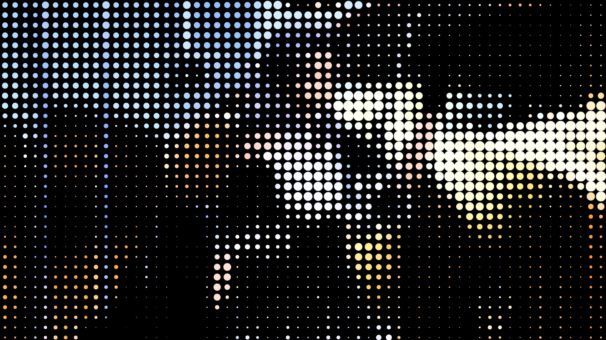 sdMosaicCircular |
画像を正方形のセルで区切って円の大きさで輝度を表します。 X,Y,Zで背景の色を変更できます。R=X,G=Y,B=Zにそれぞれ対応しています。 Siでセルのサイズを指定できます。 |
|
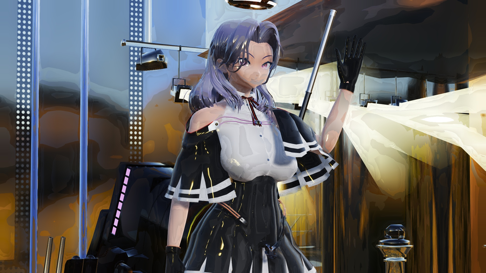 sdMosaicOil |
油絵調にします 流行のDeepLearningで作られているような本格的な物ではないので筆跡などの表現は無く、"そう言われるとそうかも"程度です |
|
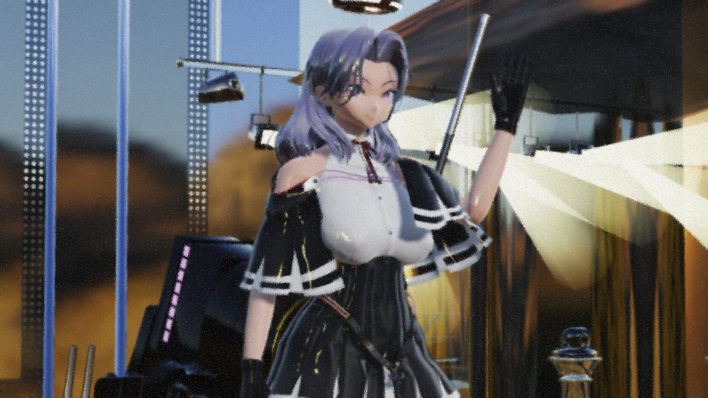 sdMosaicSand |
砂絵調にします Siでザリザリ感を調整できます |
|
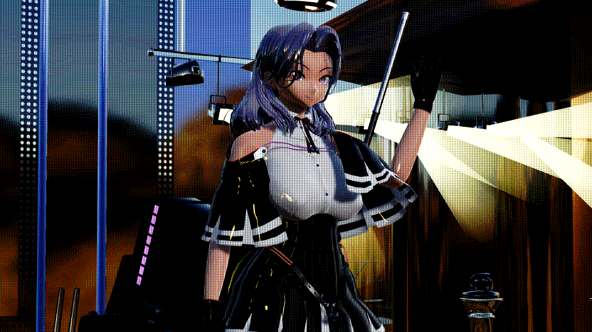 sdMosaicSplat |
誤差拡散アルゴリズムによってデジタル8色(白・黒・赤・青・緑・シアン・マゼンタ・イエロー)の点描にします Siでドットの大きさを指定します |
|
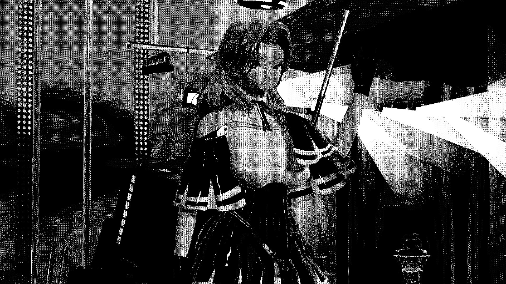 sdMosaicSplatMono |
誤差拡散アルゴリズムによって白黒2値の点描にします Siでドットの大きさを指定します |
|
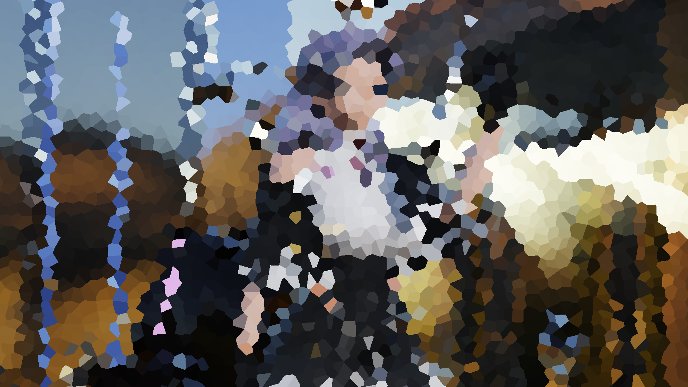 sdMosaicVoronoi |
画像をモザイクタイルで敷いたような感じにします Siでタイルの大きさを指定します |
共通の設定として、Trパラメータで効果を加減できます。
MMEffectダイアログのエフェクト名に対応するタブでsdMosaic_No.fxを割り当てると、その物体が一番手前に表示されている部分についてはエフェクトが掛からなくなり、画像の一部だけにエフェクトを掛けるという事が出来ます
外面上はあまりモザイクと関係なさそうな物も入っていますが、どのエフェクトも画像をモザイク状に区切ったり、逆にサブピクセルの集合として画素を捉えるというアプローチで作られているので、sdMosaicFragmentという命名になりました
描画順は物にもよりますが、なるべく後ろが良いでしょう。どれも基本的にSDR用ですので少なくともsdToneMapperよりは後にしてください。sdFXAAより後にするかしないかはお好みでどうぞ
Screen-Space Stochastic Subsurface Scatteringを行うポストエフェクトです。
sdPBR専用のポストエフェクトであり、pre-intgrated skin拡張シェーディングモデルを使用したマテリアル(body/skinEX.fxなど)が割り当てられた物体を、肌部分であるとして表面下散乱由来の光輸送を追加で行います。要するに肌の感じがちょっと変わります。デフォルトの設定ではpre-integrated skin,cosmetics拡張シェーディングモデルに基づいたマテリアルが割り当てられた物体にのみ効果が以下のように現れます。
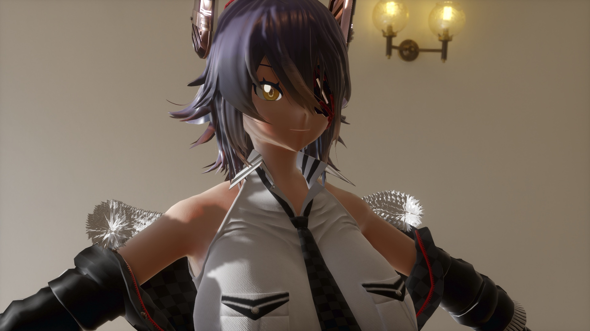 |
|
| sdSSSSSなし | sdSSSSSあり |
顔がボケたような感じになっているのが一目で分かると思いますが、この画像の見どころは
以上のような特徴が、肌部分にもたらされます。良くなるのか悪くなるのかというのはモデルとの相性や好みがあるので一概には言えません。一方で以下のような欠点もあります
基本的に細かいディテールが潰れがちなのでTrパラメータを0.5程度にして薄めて使うのが良いでしょう
基本的には上の方、sdPBRGBuffer.xの真下などが良いでしょう。但し、先に述べた「強い照明が点状に肌に当たる状況」で出るノイズがあまりにも気になる場合は、敢えてtoneMapperより下に置く事でノイズに対策することも出来ます(あんまり推奨したくはないですが)
| X,Y,Z | 表面下散乱を起こす媒質(つまり肌)のR,G,Bに対応する波長の光の平均自由行程を[mm]単位で指定します。X,Y,Zとも0の時はデフォルトの値としてX=0.909, Y=0.602, Z=0.515がセットされていると見なします(肌色用のプリセットです)。1より大きくても構いませんが、概ね1前後の値が入力されている事を前提として作られています。0.01より小さな値が指定された場合は0.01みなされます。 |
| Si | 表面下散乱による見た目のボケ具合を調整します |
その他細かい設定については.fxファイル内を覗いてみてください。
背景に奥行き感をもたらすためにしばしば使われる、フォグエフェクトです。skyboxおよび平行光源の明るさに応じたフォグの色が付くので自然な雰囲気になります。sdPBR専用のポストエフェクトというわけでもありませんが、一緒に使うとskyboxからの環境光を得てより深みのあるフォグが掛かります。
半透明体の扱いがいい加減なので注意が必要な事もあるでしょう。
以下のようにバリエーションがあります
いずれのバリエーションについても霧の密度はシーン内のどこでも一定という点では変わりがありません。ムラのある霧や雲のような効果を作りたい場合は、sdVolumetricCloudをどうぞ。
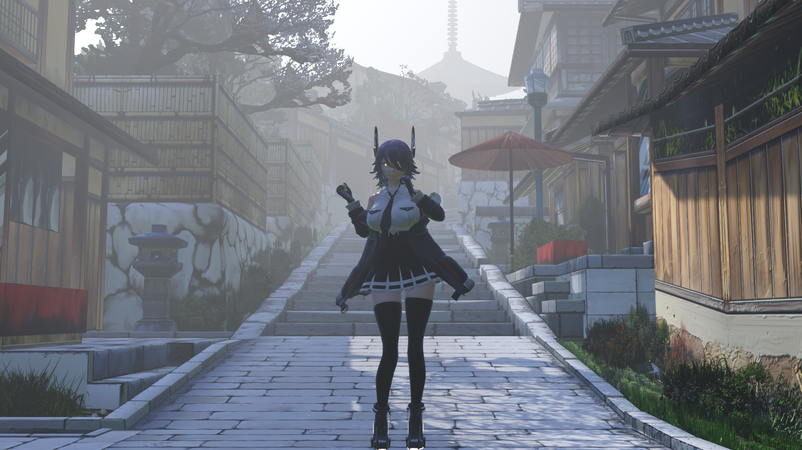 |
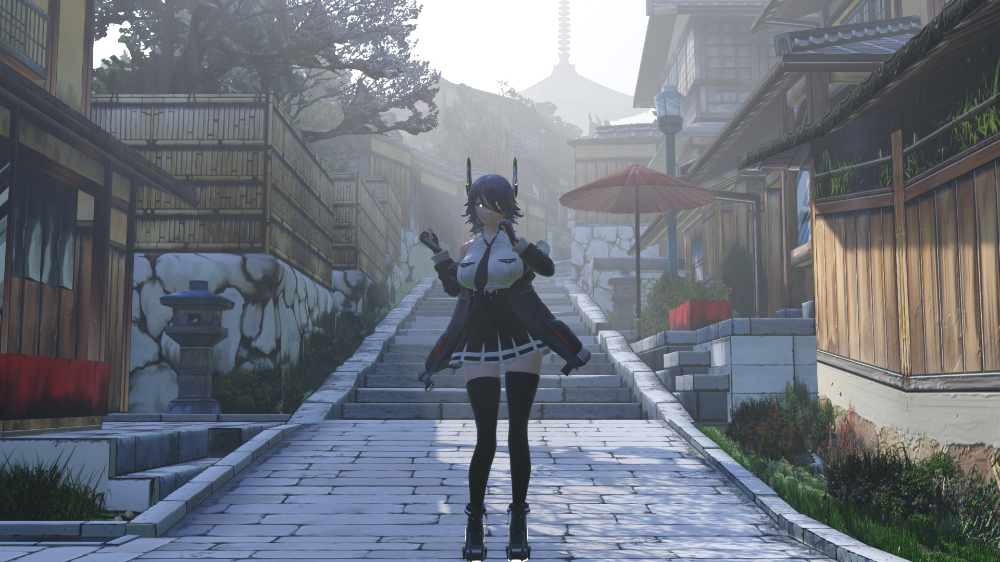 |
| sdFog | sdFogVolumetric |
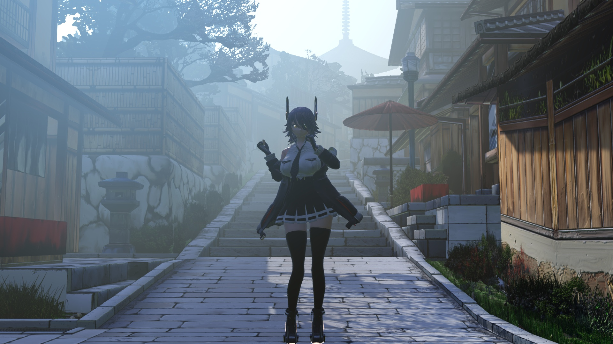 |
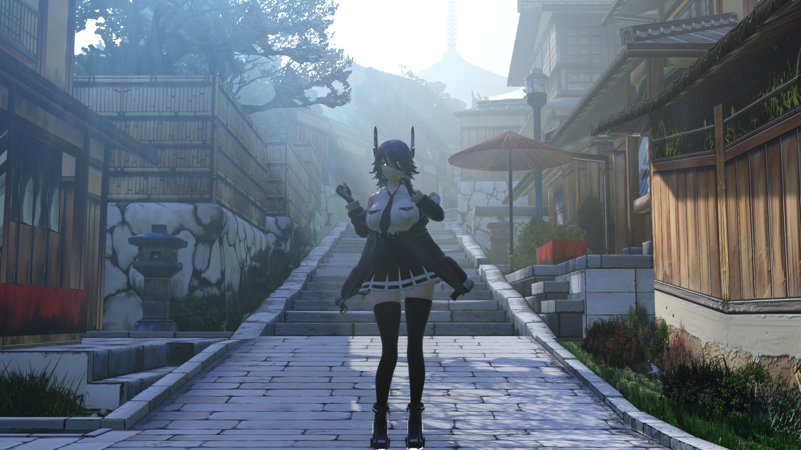 |
| sdFogMie | sdFogVolumetricMie |
| とろぽっぷ様作 天龍改二、Plover様作 ノリノリダンス、ムムム様作 清水風ステージをお借りしました | |
なるべく上が良いでしょう。追加ライトを使う場合は、sdFogをsdPBRGBufferより上にしてください
| X,Y,Z | 霧粒の散乱断面積に対するR,G,Bごとの倍率を指定し、フォグの色合いを加減できます。0が指定されていると1倍と見なされ、パラメータの数値1ごとに±1倍されます。 |
| Rx | 散乱の指向性を表す、前方散乱係数を決めます。-100～+100の範囲で指定でき、0を指定すると無指向性になります。+100の時、前方へ強い散乱が起き、-100の時、後方への散乱が強くなります。ぼんやりとした霧深い雰囲気の場合は0のままで良いですが、霧が薄い状況や逆光の時にボリュームフォグの光の筋をはっきりさせたい場合などでは50～80程度に上げると良いでしょう。 sdFogMieの場合は霧粒の粒径を制御するパラメータになります。0未満の値は0として見なされ、0の時は細かい粒子になって指向性の弱い、青味の強い散乱をし、1の時は雨粒に近いサイズの粒子になって虹を作るようになります。 |
| Ry | 環境光の影響度を弱めます。0の時が1倍で、1上げるごとに1%ずつ暗くなります。0以外の値を指定すると不自然な状態になるかもしれませんが、ボリュームフォグを作る時に光の筋を強く見せたい場合などあるでしょうから、そういう時には使えると思います。100を指定するとsdPBR.pmxの平行光源のボリュームライトに近い見た目が得られます。 |
| Rz | ボリュームフォグを作る際の直接光に対する遮蔽を考慮するカメラからの範囲を決めます。0の時1000MMD距離(約80m)に相当し、1増減するごとに10MMD距離ずつ延長・短縮されます。巨大なステージを使う場合には1000程度に増やすと良いでしょう。sdFog,sdFogMieでは無視されます。 |
| Si | フォグの濃度を指定します。 |
sdFog.xをMMDへドロップすると、MMEffectメニューのエフェクトファイル割り当てに、sdFogタブが追加されます。こちらのタブでは各物体に対する奥行きを報告するためのシェーダ(デフォルトではsdPBR付属のsdPBRDepthMap.fx)を割り当てられます。Mask_No.fxを割り当てると、割り当てられた物体が描画される範囲にはフォグが掛からなくなります。字幕をポリゴンで表示したい場合などにどうぞ。
sdPBRに同梱の舞台装置エフェクトである、FlowPetalやOceanなどはそのままでは正しくフォグが掛からないので、sdFogタブに各々のフォルダに入っている_map_(エフェクト名)_depth.fxといった奥行きマップ用エフェクトファイルを割り当てると正しくフォグが掛かります
また、sdFogVolumetric, sdFogVolumetricMieの場合は、sdFogVタブも追加されます。これは直接光に対する遮蔽を計算するための、平行光源用シャドウマップを出力するエフェクトを指定します。例えばFlowPetalで空中に浮かんでいる花びらからボリュームフォグへのスジを作りたい場合は_map_FlowPetal_OrthoShadow1.fxをFlowPetal.pmxに割り当てて下さい。花びらをかなりデカくしないと光のスジに影響が出るほどにはならないので、ほとんどの場合はやらなくてもいいと思いますが。
ねばっこいオーラをモデルから噴出させる2Dエフェクトです。あくまで2Dエフェクトなのでカメラが激しく動くとなんか変な感じになる上、流体シミュレータが内部で走っているので静止画に出力できません。その代わり、sdPBRとの併用が前提ではないので単体でも使えます。
sdNebakkoi.xとsdNebakkoiController.pmxをMMDへドロップした後、sdNebakkoi.vmdをドロップするとデフォルトの設定が読み込まれ、オーラを出す準備が出来ますが、これだけでは「どの物体からオーラが出るか」という指示がまだなので、MMEffectメニューのエフェクトファイル割り当てダイアログに追加されたsdNebakkoiタブを開き、オーラを出したいモデルを選択して、Mask_Yes.fxを指定してください。
なるべく上が良いでしょう。HDRエフェクトなのでsdToneMapperよりは必ず上にしてください。sdDiffusion又はAutoLuminousと併用すると良い感じに光ってくれます。
| 左上：オーラの線についての設定 | |
| 太さ | オーラを表現する線の太さを指定します |
| 線数 | オーラを表現する線の密度を指定します |
| アニメ速度 | 線の動く見た目の速さを指定します |
| 左下：オーラの動きについての設定 | |
| 初速 | 体から立ち上るようなオーラを出したい時は上げて下さい |
| 初速向き | 体から立ち上るような方向を指定します。0で上方向、数値を増やすと右回りに回転します |
| 拡散 | 体の中心から外側に拡散するようにオーラが広がります |
| 減衰 | オーラが広がるにつれて薄くなっていく効果を指定します |
| 回折 | オーラを回折させる障害物の密度を指定します |
| 粘性 | オーラがもったりした感じになります |
| 揺れ幅 | 円周方向に揺れる効果の幅を指定します |
| 揺れ速 | 円周方向に揺れる効果の周期を指定します |
| 右上：オーラの色についての設定 | |
| H/S/V | オーラの色を指定します |
| dH | オーラの動きと共に色相が変化する量を指定します |
| 右下：その他・キャラクター輪郭部分の発光についての設定 | |
| 輪郭太さ/明るさ/点滅 | キャラの周囲に発光した輪郭を付けられます |
| リセット | 値を0.5以上にすると流体シミュレータの状態をリセットします。長時間の非表示状態から表示状態に遷移する直前などにリセットを有効にしておくと安定した出力を得られます |
{kind=link}
{kind=link}
{kind=link}
{kind=link}
{kind=link}
{kind=link}
{kind=link}
{kind=link}
{kind=link}
{kind=link}
{kind=link}
{kind=link}
{kind=link}
{kind=link}
{kind=link}
{kind=link}
{kind=link}
{kind=link}
{kind=link}
{kind=link}
{kind=link}
{kind=link}
{kind=link}
{kind=link}
{kind=link}
{kind=link}
{kind=link}
{kind=link}